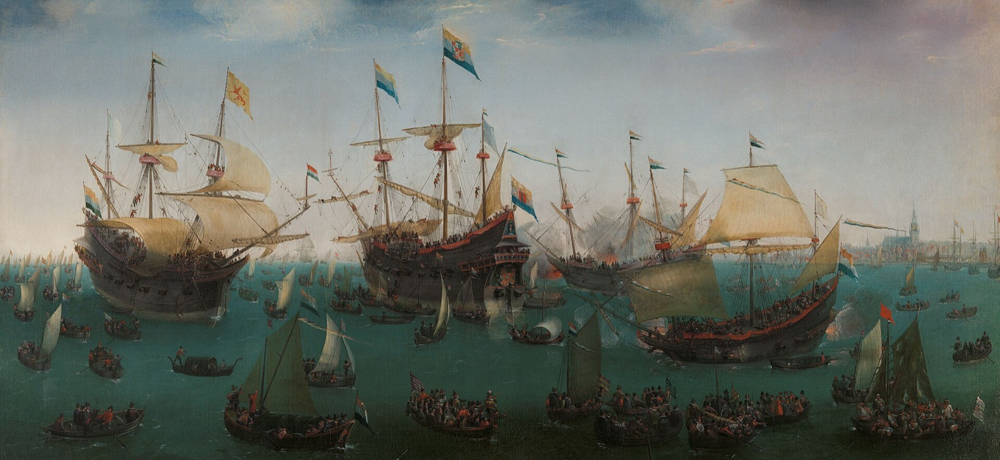

주식회사는 누가 발명했을까? — 그릇을 만든 네덜란드보다 영국이 앞서간 이유
"주식회사는 1602년 네덜란드 동인도회사가 발명했다."
경제 상식을 다룬 글에서 자주 만나는 한 줄입니다. 최초의 주식, 최초의 증권거래소, 근대 기업의 출발점. 틀린 말은 아닌데, '발명'이라는 낱말이 조금 걸립니다. 누군가 책상 앞에서 설계도를 그렸다는 느낌을 주기 때문입니다.
장면 하나를 먼저 보겠습니다. 1851년에 나온 소설 『모비 딕』에서, 화자 이스마엘은 미국 낸터킷 항구의 포경선 피쿼드호에 오르려고 선주들 앞에 앉습니다. 이 배의 큰 몫은 늙은 선장 둘이 가졌고, 나머지 지분은 연금으로 사는 노인들, 과부들, 아버지 없는 아이들, 법원이 맡아 관리하는 피후견인들이 나눠 가지고 있었습니다. 소설은 그들 각자의 몫이 배의 목재 한 토막, 판자 한 자, 못 한두 개 값쯤이었다고 적습니다[1].
선원이 받는 돈도 임금이 아니었습니다.
포경업에서는 임금을 주지 않았다. 선장을 포함한 모든 선원이 '레이(lay)'라 불리는 이익의 몫을 받았고, 그 몫은 각자 맡은 일의 중요도에 비례했다.
— 허먼 멜빌, 『모비 딕』 16장, 1851 (번역)[1]
풋내기 이스마엘에게는 항해 순수익의 300분의 1이, 노련한 작살잡이 퀴퀘그에게는 90분의 1이 매겨집니다[1]. 고래를 많이 잡아 오면 모두가 나눠 갖고, 빈 배로 돌아오거나 아예 돌아오지 못하면 아무도 받지 못합니다. 과부의 못 한 개와 선원의 300분의 1은 같은 계산에서 나온 것입니다. 한 사람이 감당할 수 없는 위험을 잘게 쪼개 여럿이 나눠 지는 계산입니다.
주식이라는 그릇은 누가 설계한 발명품이 아니라 '배가 돌아오지 않을 수 있다'는 계산에 떠밀려 하나씩 생겼고, 산업사회로 먼저 넘어간 것은 그 그릇을 먼저 완성한 나라가 아니라 번 돈을 다시 공장에 부은 나라였습니다.
피쿼드호보다 두 세기 반 앞선 암스테르담에서, 그 계산이 어떻게 한 척의 배를 넘어 영구 자본(permanent capital)을 가진 회사가 됐는지, 그리고 왜 그 회사를 만든 나라가 공장의 시대를 열지는 못했는지 차례로 보겠습니다.
한 번 항해하고, 한 번 정산하던 시절
1595년부터 7년 동안 네덜란드 공화국의 상인들은 암스테르담, 미델뷔르흐, 로테르담에서 아시아로 원정대를 따로따로 보냈습니다. 모두 합쳐 80척이었습니다[2]. 이들 '선행 회사'는 한 번의 항해 동안만 돈을 모았고, 선단이 돌아오면 짐을 팔아 나누고 회사를 청산했습니다[3].

배가 돌아올지, 무엇을 싣고 올지 아무도 모르니 셈은 배가 부두에 닿은 날 한 번에 하는 게 가장 정직합니다. 돈을 낸 사람은 그 항해 하나에만 걸었고, 항해가 끝나면 관계도 끝났습니다.
문제는 도시끼리의 경쟁이었습니다. 경쟁이 스페인·포르투갈·영국과 맞서야 할 네덜란드 전체의 힘을 깎아 먹자 연방의회가 지역 회사들을 하나로 묶었고, 그것이 1602년 3월 20일에 세워진 연합 동인도회사(VOC)입니다[2][3]. 회사는 아시아 무역을 21년 동안 독점하는 특허를 받았고, 약 640만 길더를 모았습니다[3].
돈을 낸 사람들은 거상만이 아니었습니다. 북부 항구도시 엔크하위전에서는 청약자 538명 가운데 상당수가 장인과 작은 가게 주인이었습니다[4]. 2010년 한 역사학도가 문서고에서 찾아낸, 지금까지 알려진 가장 오래된 VOC 주식 문서도 이 도시의 것입니다. 1606년 9월 9일, 피터르 하르먼스라는 주민이 150길더 출자금의 마지막 회차를 내고 받은 납입 영수증입니다. 엄밀히 말하면 주권(株券)이라기보다 영수증이라는 단서가 붙습니다[5].
그런데 VOC를 세운 사람들은 아직 '영원한 회사'를 생각하지 않았습니다. 회사는 앞 원정의 수익으로 다음 원정을 꾸리는, 서로 겹치는 원정의 연속으로 설계됐고, 10년이 지나면 회사 전체를 청산해 자본을 돌려주기로 돼 있었습니다[2]. 항해 단위의 정산을 10년 단위로 늘린 것에 가까웠습니다.
설계도에 없던 영구 자본
계획은 아시아에서 어긋났습니다. 경쟁자를 막고 향신료 독점을 세우려면 현지에 강한 거점과 선단을 둬야 했고, 그 돈은 쉽게 돌아오지 않았습니다. 첫 배는 1606년 10월에야 돌아왔습니다. 배당이 없자 주주들의 불만이 커졌고, 이사들은 1609년부터 영구 자본을 얻으려 애썼습니다[2].
1610년 여름, 짐을 가득 실은 배 네 척이 돌아오자 회사는 첫 배당을 발표했습니다. 그런데 현금이 없었습니다. 그래서 출자금의 125%를 메이스(육두구 씨껍질로 만든 향신료)나 돈으로 주겠다고 했고, 상당수 주주는 향신료 받기를 거부했습니다. 1610년부터 1612년까지 회사가 약속한 배당은 모두 162.5%, 1,040만 길더였지만, 상당 부분은 몇 해에 걸쳐 나눠 치러야 했습니다[2].
그리고 1612년 7월, 연방의회는 회사가 그해로 정해진 청산을 하지 않아도 된다고 허락했습니다[2]. 자본을 돌려받을 길이 막힌 주주에게 남은 출구는 하나였습니다. 자기 몫을 다른 사람에게 파는 것입니다[3]. 주식을 사고파는 시장은 이렇게 '빠져나갈 문'으로 커졌습니다. 암스테르담의 담 광장에는 1611년 거래소 건물이 문을 열었습니다[6].
유한책임도 같은 길을 걸었습니다. 주주의 책임이 낸 돈에 그친다는 원칙은 처음부터 있었지만, 회사 빚에 대해 이사들까지 개인 재산으로 책임지지 않는다는 원칙은 1623년에야 자리 잡았습니다. 회사가 빚으로 버티다 채권자들과 다툼이 벌어진 끝이었습니다[2].
이 과정을 VOC 초기 20년의 장부로 추적한 경제사학자들의 결론은 짧습니다.
법적 형태가 경제적 기능을 따라갔지, 그 반대가 아니었다.
— Gelderblom·de Jong·Jonker, Journal of Economic History 2013 (번역)[2]
그동안 동인도회사의 영구 자본, 법인격, 유한책임은 아시아 무역의 큰 자본과 긴 항해, 큰 위험에 맞춰 일부러 고안한 한 벌의 묶음으로 여겨져 왔습니다. 이 연구는 그 특징들이 처음부터 한 벌이 아니었고, 그때그때의 돈 문제에 떠밀려 하나씩 붙었다고 봅니다[2].
'최초'라는 말에도 단서가 붙습니다. 위키백과도 VOC를 '세계 최초의 주식회사'가 아니라 '최초의 주식회사들 가운데 하나'로 적고, 세계 최초의 다국적 기업이라는 말에는 '때로 그렇게 여겨진다'는 단서를 답니다[3]. 거래소도 마찬가지입니다. 역사가 페르낭 브로델은 암스테르담을 흔히 최초의 주식시장이라 부르지만 정확하지 않다고 했고, 주식과 비슷한 것을 사고파는 작은 시장은 몇 세기 전 베네치아와 피렌체, 제노바에도 있었습니다[6].
영국은 반세기 늦었고, 그다음엔 문을 닫았다
영국 동인도회사는 VOC보다 먼저, 1600년 12월 31일 엘리자베스 1세의 특허장을 받았습니다. 그러나 1601년부터 1612년까지의 원정은 '개별 항해'로 불립니다. 출자자들이 항해마다 따로 비용을 대고 그 항해의 이익을 가져갔기 때문입니다[7]. 그 뒤로도 회사의 자본은 정해진 기간이 끝나면 돌려주는 기한부였고, 1657년 '새 일반 주식'이 나온 뒤에야 점차 기한 없는 자본으로 넘어갔습니다[8]. 네덜란드보다 반세기쯤 늦은 셈입니다[2].
그다음 영국은 아예 문을 좁혔습니다. 남해회사 투기 열풍이 한창이던 1720년 6월, 의회는 이른바 거품법(Bubble Act)을 만들어 국왕의 특허장 없이 주식을 내고 돈을 모으는 사업을 불법이자 무효로 선언했습니다. 이 법은 1825년에야 부분 폐지됐습니다[9]. 법학자 론 해리스는 1720년부터 1844년까지 영국의 기업 조직 법이 산업혁명이 일으킨 거대한 변화에도 '놀라울 만큼 정체돼' 있었다고 봅니다[10].
누구나 일곱 사람만 모이면 간단한 등록으로 유한책임 회사를 세울 수 있게 된 것은 1856년 합자회사법부터입니다. 법안을 낸 사람은 상무원 부총재 로버트 로우였고, 회사 이름 뒤에 'Ltd'를 붙여 유한책임임을 알리자고 한 것도 그였습니다[11].
날짜를 나란히 놓으면 이상한 그림이 나옵니다. 거품법이 주식회사의 문을 좁혀 둔 1720년부터 1825년까지는 영국의 새 산업이 커 가던 시기와 겹칩니다. 면직·제철처럼 새 발명의 덕을 크게 본 부문은 1831년에 이미 영국 공업 생산의 36%, 3분의 1이 넘는 몫을 차지했습니다[12]. 그릇이 묶여 있는 동안 공장은 섰습니다.
그릇이 닫힌 나라에서 공장이 섰다
그렇다면 영국의 공장은 무슨 돈으로 지어졌을까요. 경제학자 벤투라와 보트는 선행 연구들을 정리하며 이렇게 설명합니다. 면직, 제철, 석탄, 도자기처럼 새로 뜨던 산업은 처음에 자본이 모자랐습니다. 은행은 작고 규제에 묶였고, 거품법 때문에 새 주식을 내서 돈을 모으는 길도 사실상 막혀 있었습니다. 그래서 이 산업들은 주로 자기가 번 이익을 다시 넣고, 친구와 가족, 동네 부자에게 빌리는 방식으로 자랐습니다[12].
비유하자면 이렇습니다. 네덜란드는 큰 저수지를 먼저 팠고, 영국의 공장들은 저수지 대신 제 마당에 떨어진 빗물을 다시 제 밭에 부었습니다. 저수지가 크다고 밭이 저절로 젖지는 않습니다. 물이 어디로 흘러가느냐가 따로 있습니다.
네덜란드에는 돈이 모자라지 않았습니다. 18세기 네덜란드의 저축자들은 투자처를 나라 밖에서 찾았고, 그 기회는 아이러니하게도 자주 영국에 있었습니다. 1780년 무렵 네덜란드가 외국 정부에 빌려준 돈은 순액으로 3억 5천만 길더를 넘었을 것으로 추정되고, 그중 3분의 2가 영국 국채였습니다[13]. VOC가 처음 모은 자본의 50배가 넘는 액수입니다. 178년 차이가 나는 명목 금액이라 그대로 견줄 수는 없지만, 크기의 감은 잡힙니다.
다만 여기서 '네덜란드는 돈을 엉뚱한 데 써서 졌다'고 줄이면 지나칩니다. 네덜란드가 왜 먼저 산업화하지 못했는지에 대해서는 설명이 여럿이고, 서로 갈립니다.
한 갈래는 비용입니다. 경제사학자 드 브리스와 판 데르 바우더의 설명을 따르면, 18세기 네덜란드는 임금도 세금도 높은 경제여서 일손이 많이 드는 산업에 투자할 유인이 약했습니다. 나랏빚 이자로 사는 계층은 재정 개혁에 반대했습니다[13]. 다른 갈래는 에너지입니다. 경제사학자 로버트 앨런은 네덜란드 도시들이 늘어나는 연료 수요를 먼저 이탄(泥炭, 땅에 쌓인 식물이 덜 썩어 굳은 연료)으로 채웠기 때문에, 연료값이 눌려 독일 루르 석탄을 개발할 이유가 없었다고 봅니다. 그는 그 석탄이 더 일찍 개발됐다면 산업혁명이 네덜란드와 독일의 돌파가 됐을 수도 있다고까지 씁니다[14].
왜 영국이었나 — 답도 하나가 아니다
영국 쪽 설명도 갈립니다. 널리 알려진 것은 제도론입니다. 1688년 명예혁명이 의회의 우위와 안전한 재산권을 굳혀 투자하기 좋은 환경을 만들었다는 것입니다. 앨런은 이 설명에 약점이 있다고 지적합니다. 1688년 뒤의 금리와 은행 자료에서 뚜렷한 단절이 보이지 않고, 재산권은 프랑스에서도 그만큼 안전했다는 것입니다[14].
앨런 자신의 답은 값입니다. 18세기 영국은 임금이 높고 에너지가 싼 경제였습니다. 탄광 도시 뉴캐슬은 임금에 견준 연료값이 세계에서 가장 싼 곳이었고, 결정적인 것은 싼 석탄이었습니다. 사람 손을 기계와 석탄으로 바꾸는 발명이 가장 수지맞는 곳이 영국이었다는 것입니다[14]. 이 설명에도 반론이 있습니다. 제인 험프리스와 벤저민 슈나이더는 손으로 실을 잣던 여성과 아이들의 임금을 새로 모아, 산업혁명의 선두였던 방적 부문에는 고임금이라 할 만한 것이 없었고 기계화의 동기는 다른 데서 찾아야 한다고 반박했습니다[15].
숫자보다 중요한 게 하나 있습니다. 이 설명들 가운데 어느 것도 '영국이 주식회사를 더 잘 만들어서'라고 말하지 않습니다. 그릇을 먼저, 더 잘 만든 쪽은 네덜란드였습니다. 산업혁명을 가른 물음은 그릇의 모양이 아니라 그 안의 돈이 어디로 흘렀느냐, 그리고 무엇이 그 흐름을 정했느냐 쪽에 있습니다. 그 '무엇'이 임금이었는지 석탄이었는지 제도였는지는 아직 다투는 중입니다.
필자 한마디
'VOC가 주식회사를 발명했다'는 말을 외운 것은 잘못이 아닙니다. 다만 그 말은 결과만 남기고 과정을 지웁니다.
"제도는 설계도에서보다 곤경에서 더 자주 태어납니다." 영구 자본은 청산을 미룬 결과였고, 주식시장은 돈을 돌려받지 못한 사람들의 출구였습니다. 그리고 가장 좋은 그릇을 가진 나라가 다음 시대를 연 것도 아니었습니다.
피쿼드호의 과부들이 쥐고 있던 못 한 개는, 그래서 꽤 오래된 계산입니다.
주식과 배당은 배가 돌아오지 않을 위험을 여럿이 나눠 지는 계산에서 나왔고, VOC는 그 계산을 10년짜리 회사로 늘렸다가 1612년 영구 자본을, 1623년 이사의 유한책임을 떠밀리듯 얻었습니다. 영국은 그 그릇을 반세기 늦게 얻고도 1720년부터 법으로 묶어 두었고, 산업혁명의 공장들은 주로 스스로 번 이익을 다시 넣어 자랐습니다. 왜 네덜란드가 아니라 영국이었는지는 임금, 석탄, 제도를 두고 학설이 갈립니다.
오늘 '최초로 발명했다'는 말을 들으면 한 번 물어보세요. 그것은 누가 설계한 것이었을까요, 아니면 무엇에 떠밀려 생긴 것이었을까요.
이 글은 일반적인 정보 제공을 위한 것이며 투자 조언이 아닙니다. 동인도회사와 산업혁명에 대한 해석은 연구가 쌓이며 바뀌고 있으니, 인용하실 때는 최신 연구를 함께 확인하세요.
참고문헌
- Melville, H. Moby-Dick; or, The Whale, 1851, 16장 「The Ship」·18장 「His Mark」. Project Gutenberg #2701. 링크 ↩
- Gelderblom, O., de Jong, A., Jonker, J. The Formative Years of the Modern Corporation: The Dutch East India Company VOC, 1602–1623. Journal of Economic History 73(4): 1050–1076, 2013 (ERIM 워킹페이퍼판 ERS-2012-007-F&A로 확인). 링크 ↩
- 위키백과. Dutch East India Company (백과). 링크 ↩
- DutchNews.nl. World's oldest share found in Hoorn archive, 2010-09-11. 링크 ↩
- Guinness World Records. Oldest share certificate. 링크 ↩
- 위키백과. Amsterdam Stock Exchange (백과; 브로델 인용). 링크 ↩
- Encyclopædia Britannica, 11판. East India Company, 1911. Wikisource. 링크 ↩
- Jennings, Z. P. The English East India Company's Transition to a Permanent Capital, 1600–1685. 박사학위논문, London School of Economics, 2024. 링크 ↩
- 위키백과. Bubble Act 1720 (백과). 링크 ↩
- Harris, R. Industrializing English Law: Entrepreneurship and Business Organization, 1720–1844. Cambridge University Press, 2000 (저자 페이지의 책 소개). 링크 ↩
- 위키백과. Joint Stock Companies Act 1856 (백과). 링크 ↩
- Ventura, J., Voth, H.-J. Debt into Growth: How Sovereign Debt Accelerated the First Industrial Revolution. Universitat Pompeu Fabra Economics Working Paper 1483, 2015. 링크 ↩
- 위키백과. Economic history of the Netherlands (1500–1815) (백과; de Vries & van der Woude, The First Modern Economy, 1997 인용). 링크 ↩
- Allen, R. C. The British Industrial Revolution in Global Perspective: How Commerce Created the Industrial Revolution and Modern Economic Growth. 워킹페이퍼, Nuffield College, Oxford, 2006. 링크 ↩
- Humphries, J., Schneider, B. Spinning the industrial revolution. Economic History Review 72(1): 126–155, 2019. 링크 ↩